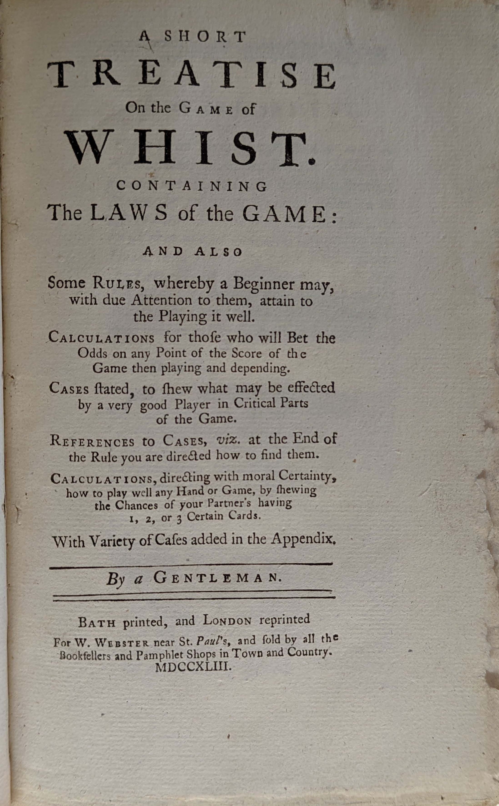

A Descriptive Bibliography of Edmond Hoyle
Copyright © 2014-26 by David Levy
(page updated 2026-01-30)User Guide
Whist.1.P.1.1
A Short Treatise on the Game of Whist, printed for W. Webster, first piracy of the first edition, first edition, 1743.
 |
Title: |
A SHORT | TREATISE | On the Game of | WHIST. | CONTAINING | The LAWS of the GAME: | AND ALSO | Some Rules, whereby a Beginner may, | with due Attention to them,
attain to | the Playing it well. | Calculations for thoſe who will Bet the | Odds on any Point of the
Score of the | Game then playing and depending. | Cases ſtated, to ſhew what may be effected | by a very good
Player in Critical Parts | of the Game. | References to Cases, viz. at the End of | the Rule you are directed how to find
them. | Calculations, directing with moral Certainty, | how to play well any
Hand or Game, by ſhewing | the Chances of your Partner’s having | 1, 2, or 3
Certain Cards. | With Variety of Caſes added in the Appendix. | [rule] | By a Gentleman. | [double rule] | Bath printed, and London reprinted | For W. Webster near St. Paul's, and ſold by all the | Bookſellers and Pamphlet Shops in Town and
Country. | MDCCXLIII. |
| Collation: |
8o: [A]4 χ2 B–M4 [$½ (−L2) signed]; 50 leaves, pp. π[1–5] 6–8 [9–12], [1] 2–86 [87–88] [misprinting 52 as 53] |
| Half Title: |
‘A SHORT | TREATISE | On the Game of | WHIST.’ |
| Contents: |
Signature (Page) Reference |
Contents |
Signature (Page) Reference |
Running Titles |
| A1r (π1) |
half title |
|
|
| A1v (π2) |
blank |
|
|
| A2r (π3) |
title |
|
|
| A2v (π4) |
blank |
|
|
| A3r–A4v (π5–8) |
‘[headpiece] | Advertisements. | [letter from a Gentleman at Bath]’ |
|
|
| χ1r–χ2v (π9–12) |
‘[headpiece] | THE | CONTENTS. | [...]’ |
χ1v–χ2v (π10–12) |
‘The Contents.’ |
| B1r–M3v (1–86) |
‘[headpiece] | A SHORT | TREATISE | ON | The Game of Whiſt. | [...]’ |
|
|
| M4r–M4v (87–88) |
blank |
|
|
| Catchwords: |
D4r(23) again; [again,] |
| Publisher: |
James Mechell, “W. Webster” |
| Printer: |
James Mechell (Cogan v Chapelle, ornaments) |
| Notices: |
1743-02-19 General Evening Post: "This day was published, price 2s. A Short Treatise on the Game of
Whist...N. B. This has been privately sold for one guinea. By a Gentlemen.
Bath printed, London reprinted, for W. Webster..." |
| Price: |
2s. (advertisement) |
| References: |
ESTC T106241, Horr 642, Jessel 774, Marshall s7 no.8 p4 (1889-07-06), Rather 2 |
| Copies Seen: |
BFl [I.795/HOYL (b1124768)]; L [E.2208(2)]; O [38474 e.21] (Google); O [Jessel e.638]; O [Jessel e.641] (ECCO) (title state 4 and gathering B setting 2); CLU-C [*GV1277.H86 1743]; CLU-SC [uncat] (Internet Archive); CSmH [303092]; CSt [GV1277.H89 1743]; CU-BANC [pGV1277.H69 S5 1743]; DLC [AC901.M5 vol. 1049, no. 1 Misc Pam]; ICN [V1639.42] (gathering E setting 2); NNPM [PML 79484]; NvLN [GV1277.H69]; OCl [789.87H F43W]; TNJ [GV1277.H87 1743a c.2]; TxU [GV1277.H89]; Levy [1045]; Levy [1679]; Levy [1680]; Levy [1760] |
| Other Copies: |
C [S413.c.74.1]; C [Syn 7.74.46(12)]; TNMS [419] (gatherings B and K setting 2); Bodard; CtY-BR [NLp80 742ha]; CtY-LW [63 743 H85A]; KU-S [C970]; LU [GV1277.H89]; MoU [GV1277.H69 1743]; ViW [GV1277.H89 1743] |
| Notes: |
There are two settings of gatherings B-H and K and one setting of I, L, M, A, and
χ. Within
gathering A, there are two settings of the half title, four states of the title
page, and two
states of the advertisement on A3r. Title page state 1 is found with setting 1
of the half title
and state 1 of the advertisement. Title page state 2 is found with setting 2 of
the
advertisement and state 1 of the advertisement. Title page states 3 and 4 are
found with setting
2 of the half title and state 2 of the advertisement. These variations in type
are illustrated here). Copies with the first setting of gatherings B-H and K are are included here as first
editions. All have the first setting of the half title, the first state of the
title page, and
the first state of the adverisement, with exceptions noted. Copies with the second setting of gatherings B-H and K are second
editions (described here) and have the second setting of the half title, the second through fourth states
of the
title page, and the second state of the advertisement. There are occasional copies of a first edition with a second setting of one or two
gatherings and similarly an occasional second edition with a first setting of one
of the gatherings. These anomolies are noted with the respective copies. In particular O [Jessel e.641] is included here despite its fourth state title page.
The
rest of the gatherings are first settings, so the book is recorded here as a first
edition, even
though the title page identifies it as a second edition. |
Home